Caveats and Story
My laptop is broken. I am away from office. I have an iPad Pro 2020. I got my office desktop’s magic keyboard and trackpad. In this post I am discussing if iPad can help given that I do not have (physical) access to my main computers. Would I recommend this over a main computer - No! But, can you do some things on the iPad reasonably well enough given keyboard and trackpad - Yes!
The Hardware
The magic keyboard and the magic trackpad greatly increase the iPad experience and make it programmer friendly.
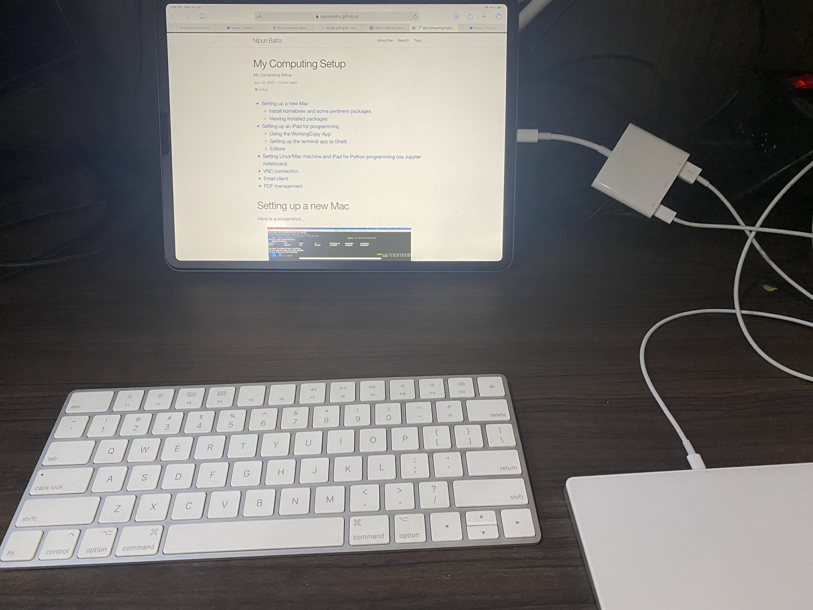
Setting up an iPad for programming
Setting up the terminal app (a-Shell)
Configuration
First, after installing a-Shell, I like to set the font size, terminal background and foreground color. Here is how the a-shell app looks like
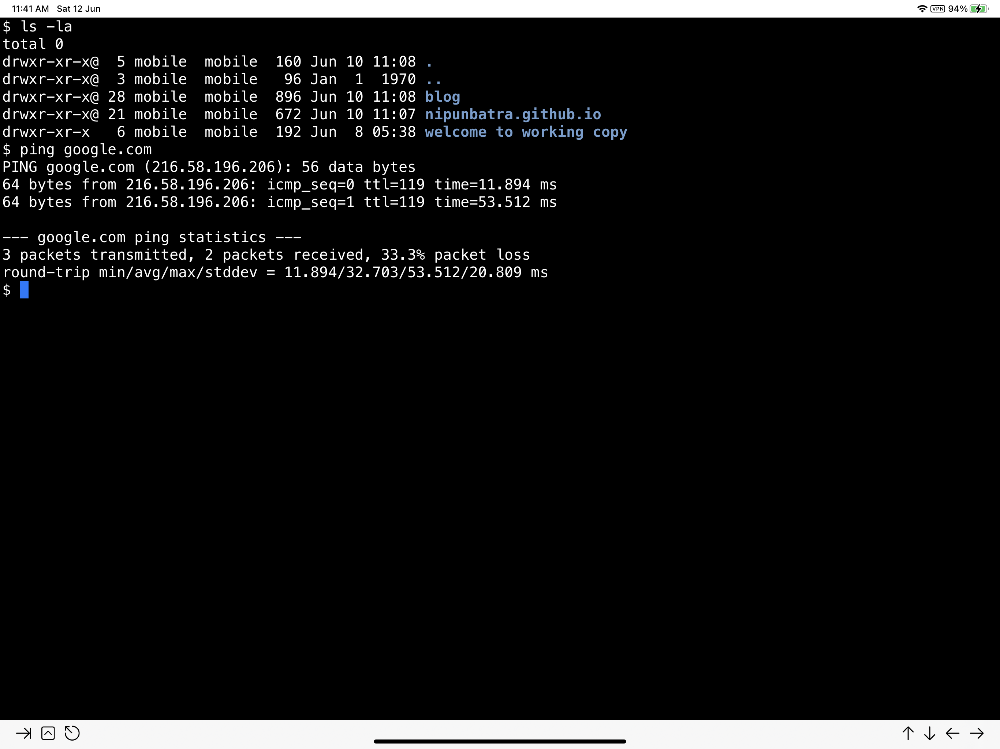
config -b black -f white -s 20
Text editing and bookmarks
Sometimes I like using vim for editing documents and interfacing with WorkingCopy. a-Shell provides vim!
I like to setup a bookmark to the WorkingCopy folder so that I can direcly edit files in that location.
I do so by: writing pickFolder in a-Shell and setting it to WorkingCopy folder. Now I can set a bookmark to this location. I do so by: bookmark git in the current location (set by pickFolder)
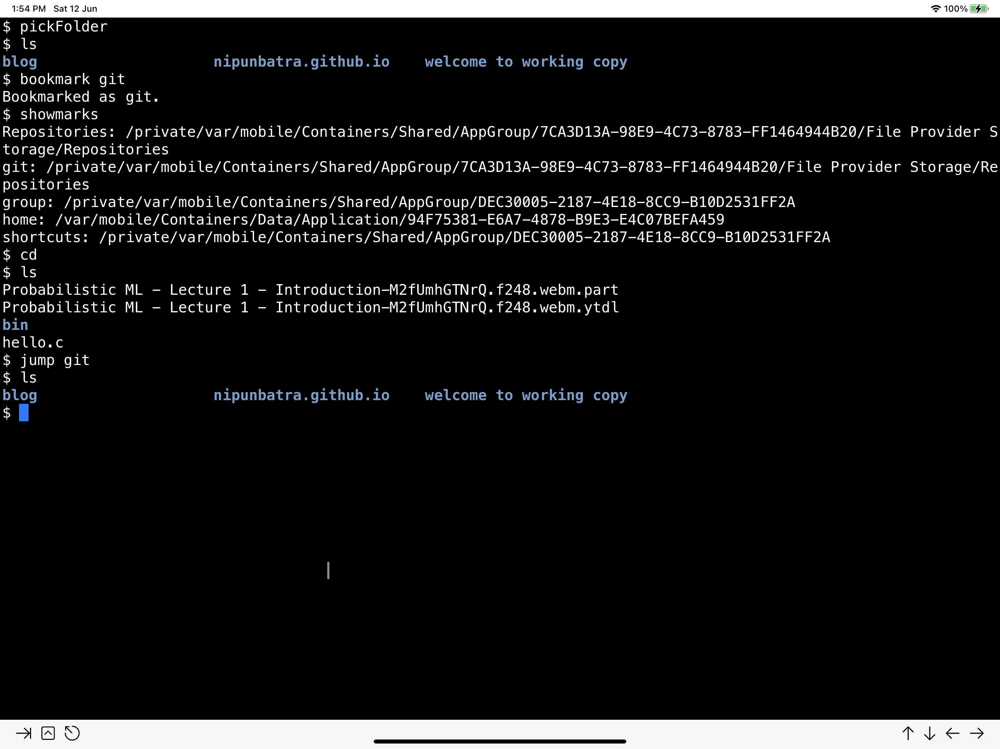
git" class="img-fluid">Git
Interestingly, the latest testflight version of a-shell also provides a “Git-like” interface called libgit2. Configuring it requires specific steps that I’m writing below. Some of these steps are borrowed from this nice tutorial and some are specific to a-shell that I was able to get working courtesy a Twitter discussion with the creator of a-shell.
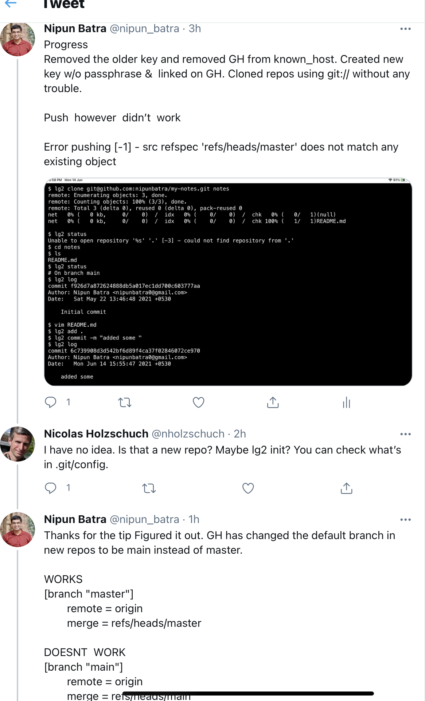
Now, the steps.
First, we need to create a new ssh key.
We do so by
ssh-keygen -t rsa -b 4096 -C "email@domain.com"While configuring I did not setup the passphrase.
The private and public keys are stored in .ssh with the name id_rsa
$ ls -lah .ssh|grep "id"
-rw------- 1 mobile mobile 3.3K Jun 14 15:43 id_rsa
-rw------- 1 mobile mobile 747B Jun 14 15:43 id_rsa.pubNext, I copied the public key in a newly generated ssh key in Github and gave it a name.
Next, I modified .gitconfig as follows
$ cat .gitconfig
[user]
email = MY EMAIL ID
name = MY NAME
identityFile = id_rsa Now, I was almost done!
I was able to push and pull from some old Github repositories but the same did not work with the newer repositories. Again, after a discussion with the creator of a-shell, I figured, this was due to the fact that Github changed the name of the default branch as “main” instead of the earlier “master” whereas libgit2 implementation was expecting “master”.
As a quickfix I renamed the branch on my Github repo as “master” and for now set the default branch to be named “master”.
Finally, I am able to pull and push to the repositories. The next image infact is showing commits and pushes made to the repository generating the blog post you are reading.
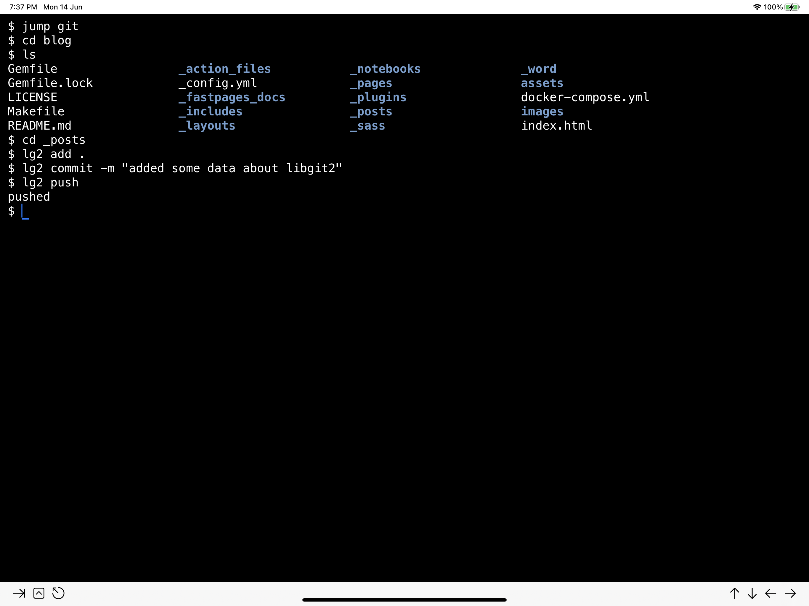
SSH/SFTP
There are a couple of amazing apps: Termius and SecureShell. Both have very neat interfaces. I found the intergrations with the Files app very good!
The GIF below shows the SecureShell app in action where I transfer a file from my local storage (iPad) to remote server, process that file, and quickly copy the processed file back to local storage.

Another great functionality of the SecureShell is the “Offline” folder.
Another setting that I use is the Powerline fonts on my remote systems. Using Fontcase, I installed the corresponding powerline fonts on the iPad so that my SecureShell session looks great.
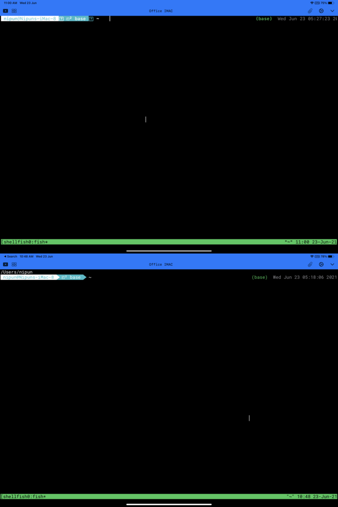
Some other amazing tools
I like the “view” utility in a-shell a lot. It can quickly help you preview various filetypes.
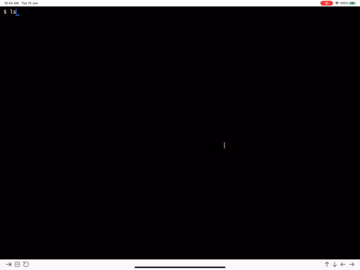
Also, as a quick tip, one can use Command + W to quickly exit the preview and use the back and forward keys to cycle through the files. This is very useful!
I also like the fact that the convert tool now comes in inbuilt. It can convert between a variety of formats easily.
pbcopy and pbpaste are very convenient utilities to copy to and from the clipboard. Here is how I copied the content of factorial.py into the clipboard.
pbcopy < factorial.py Shortcuts
a-Shell interfaces nicely with Shortcuts. The following gif shows an interface where I take an input from Shortcuts app -> Pass it to a Python script and execute it inside a-shell -> Store the results in a text file -> View the content of the text file in Shortcuts.
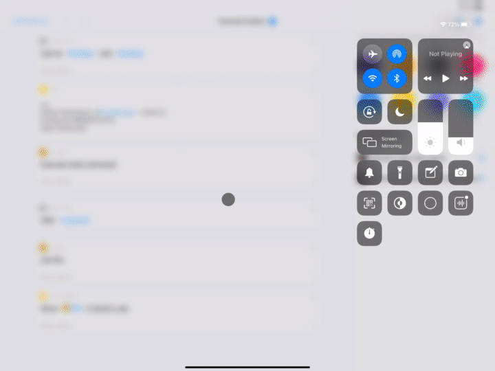
The link to this shortcut is here
The following is the simple Python script I used called factorial.py
import math
import sys
num = int(sys.argv[1])
print(f"The factorial of {num} is {math.factorial(num)}")The following is an image of the shortcut.
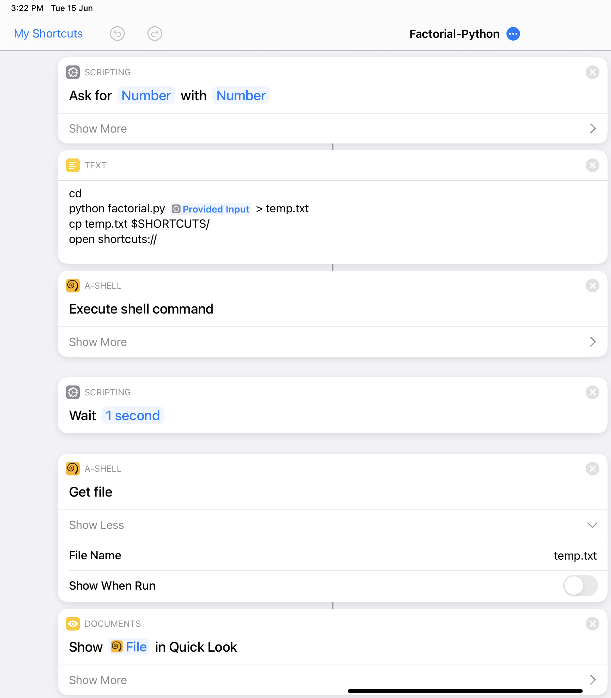
Based on the suggestion here, I used pbcopy to copy the content to the clipboard and use it directly. It reduces the number of lines!
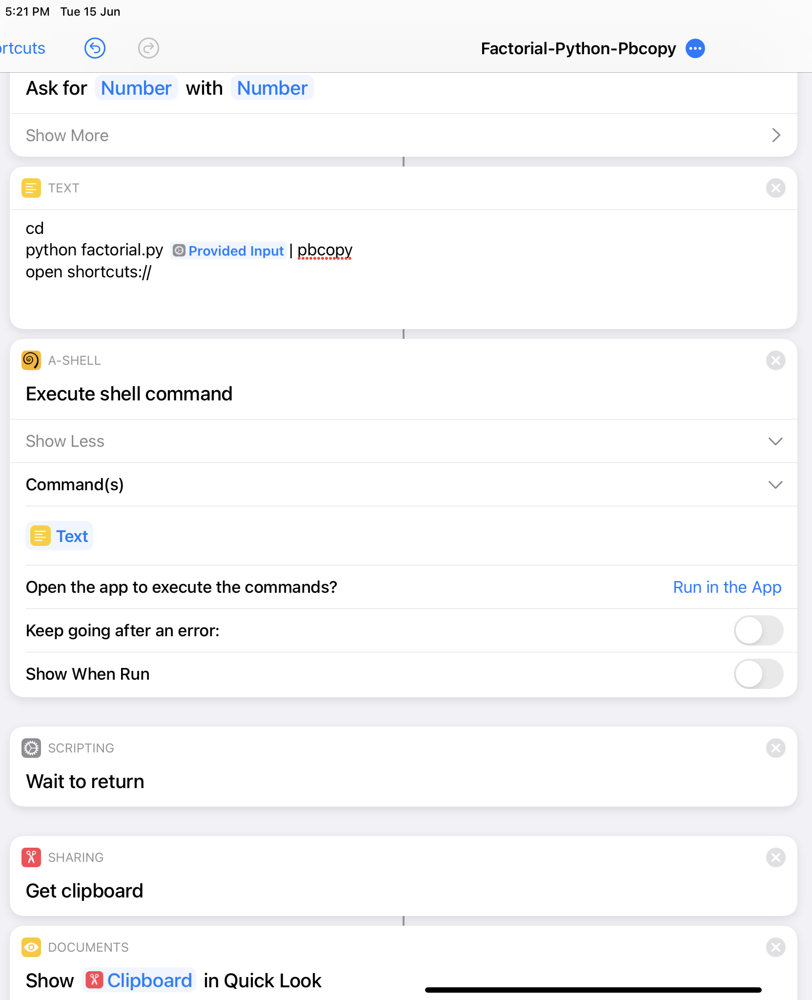
Using the WorkingCopy App
WorkingCopy is a very nicely made Git app on the iPad. It is one of the best made apps I have used!
I’ll let the pictures do the talking.
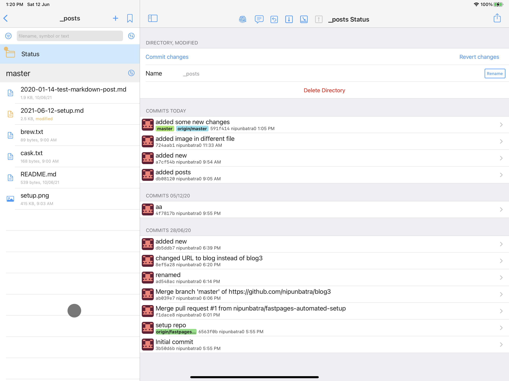
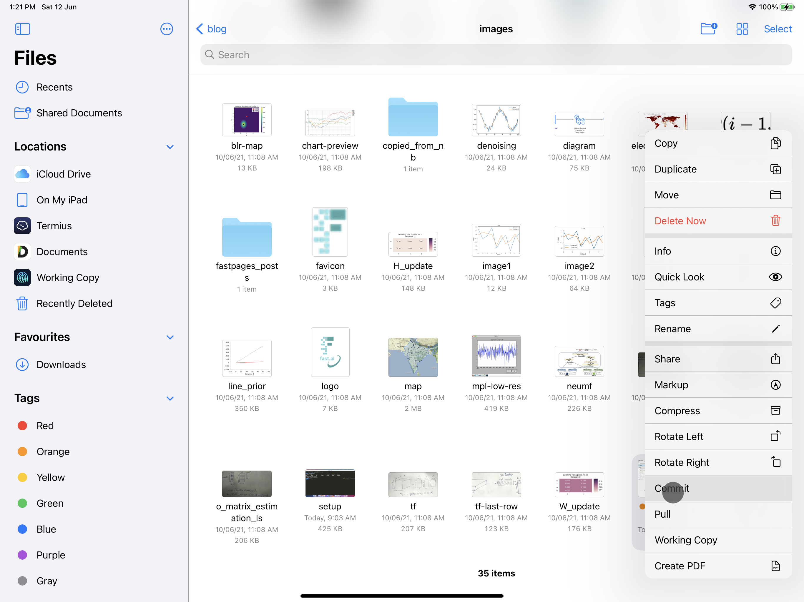
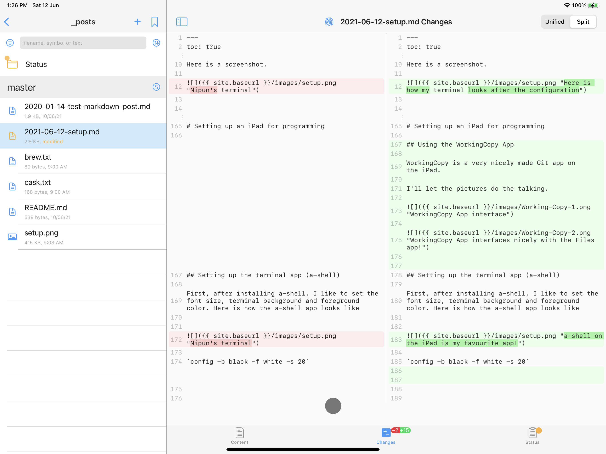
Editors
I use one of the following for editing:
- Koder App
- WorkingCopy App
- vim (in a-Shell)
- Textastic
- Typewriter for Markdown — is an editor only for markdown but gives a nice quick preview. The image below shows the screenshot from Typewriter for Markdown app.
Setting Linux/Mac machine and iPad for Python programming (via Jupyter notebooks)
On the Linux/Mac (remote server) machines I set up Jupyter notebooks as follows:
First, I create the configuration file via: jupyter notebook --generate-config
Next, In ~/.jupyter/jupyter_notebook_config.py change
c.NotebookApp.ip = '0.0.0.0'
c.NotebookApp.allow_origin = '*'
c.NotebookApp.port = SET YOUR PORT
c.NotebookApp.open_browser = FalseSet password using:
jupyter notebook password Run notebook as:
nohup jupyter notebook& On the client end (iPad in this case), I use one of the following two ways to access remote Jupyter instances:
Using the Juno Connect app Juno connectly nicely saves all the configuration and can do the necessary port forwarding
Using Safari and opening the remote Jupyter URL Just open the remote URL with the set port number. I use my workplace recommended VPN client to get into my workplace network and access non-public IP based servers.
VNC connection
I tried a few VNC software and found AnyDesk to work fairly well. I did a bunch of small settings tweak. * I setup a password on my remote machine for uninterruped access * I put AnyDesk in the login items on my remote machine so that it starts when the system boots
Email client
I like the Spark app.
- The interface is pretty clean.
- It has a bunch of keyboard shortcuts making it nice to use with an external keyboard.
- It is trivial to interface with various cloud providers.
- It is trivial to save an email as a PDF.
- It is trivial to create a “link” to an email for sharing.
PDF management
The iPad Files app is a fairly well made app. Perhaps not as functional as the Mac Preview app, but, does some things well.
For instance, merging multiple PDFs is easier (for me) than doing the same on Mac. One just needs to select multiple files and then “right” click to “Create PDF”
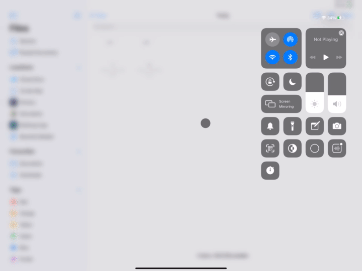
I use the following ffmpeg command (inside a-Shell) to create this GIF courtesy this excellent tutorial from GIPHY folks
PDF viewing
The Documents app has a very nice pdf viewing experience. It gives the “full-screen” experience on connected displays and can potentially be an excellent pdf viewer for showing my slides on the projector in the classroom setting.
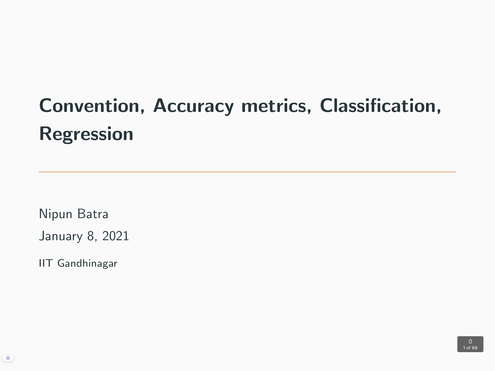
Another advantage of the Documents app PDF viewer is that we can change the tone to Sepia or Dark. The following image shows the view I get when I change the tone to Dark.
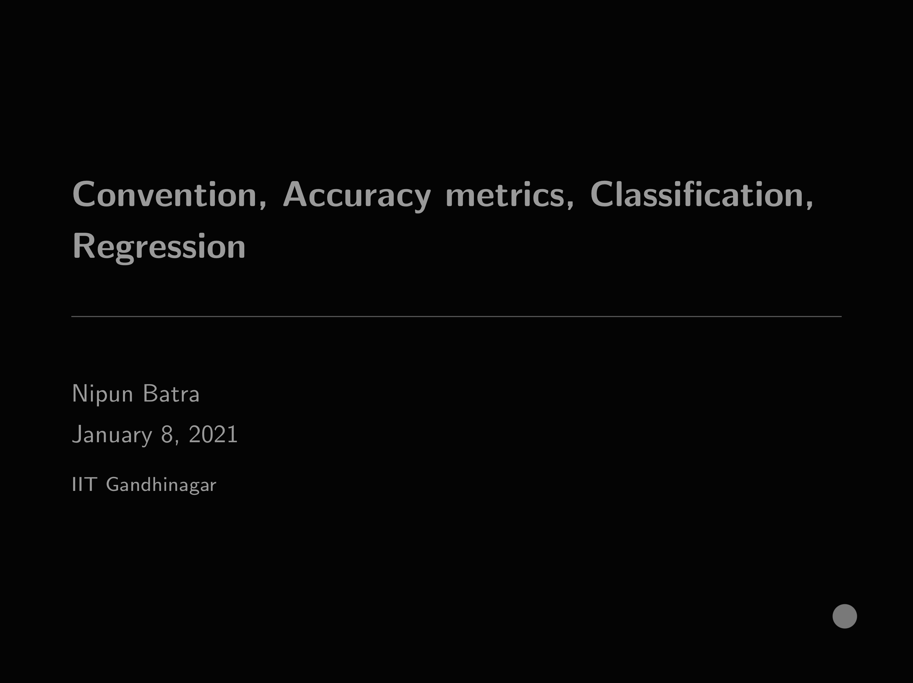
When connected to an external display, the PDF viewer gives various options. In the next image, I show the view when I “focus” on a part of the slide.
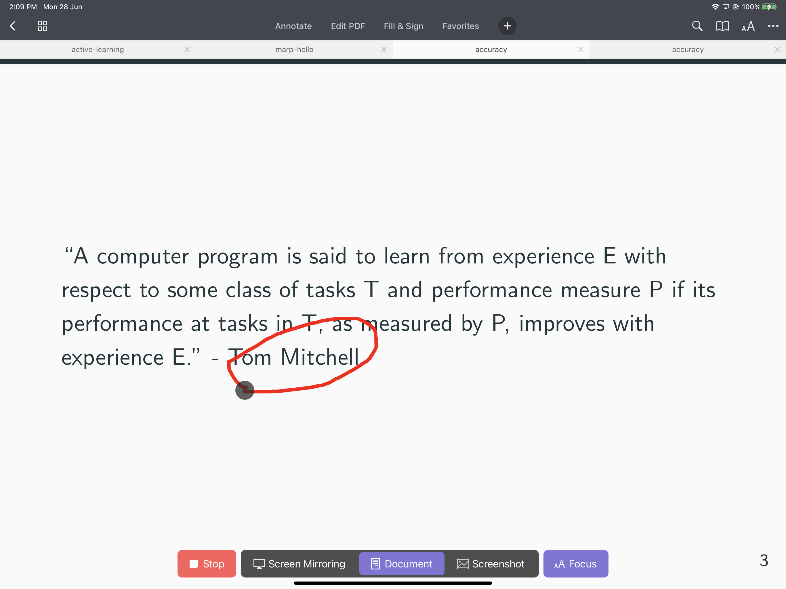
Finally, the image below shows the “focused” slide on the external display.

ffmpeg -i Video.MP4 -filter_complex "[0:v] fps=12,scale=720:-1,split [a][b];[a] palettegen [p];[b][p] palette
use" CombinePDF.gifAnother alternative is to use the following shortcut to convert the screen recorded video into a GIF
Some Safari keyboard shortcuts
- Command + W for closing a tab
- Command + L for going to the address bar (sometimes on tabs I am not automatically on the address bar)
Conclusions (and rants)
For the long run, ofcourse, I would not recommend this kind of a setup. There is some learning and fun in getting a “resticted” device to function well, but as a main machine, probably no, at least not for the next few months. A comparably priced laptop (say M1 Macbook Air) would offer a lot more.
There are many things I’m missing:
- Projection to a projector and screen recording do not work at the same time.
- No proper dev environment like VSCode
- A lot of screen size is “wasted” due to the OS
- A lot of the apps are not as good as I’d like. For instance, perhaps a minor thing, but the Youtube app doesn’t have a keyboard shortcut for full screen. One can ofcourse do the same on Safari. iMovie in Mac has a remove background noise feature that works very well. The iPad version does not have the same.
- Safari though much improved over the years is not as functional as Safari on the Mac
- While quicklook/Files is good, the functionality of something like Preview is hard to beat
- The files app can not show hidden files and folders
- Powerpoint does not have features like audio recording (though can play)
- Keynote, Pages, Numbers require additional clicks than their Mac counterparts
- When I connect to an external display, I get thick black bars and moreover, if the monitor does not give me an HDMI out, I can not hear audio as the audio is also routed. As good as the iPad’s display is, it is not huge and strains my eyes after a while.
- Copy pasting using the keyboard is a hit and miss. For instance, it fails several times for me when copying from a pdf. Right clicking and copy seems to always work, but, it is more steps than Command C, Command V.
- I miss some quality apps like OBS Studio, especially being an academic teaching remotely due to the pandemic.
- While a-shell is amazing, it is limited by what webassembly can do. At the time of writing, it does not support multithreading and thus the performance of utilities like
ffmpegis severely limited. Also, a-shell programs can not be stopped intermediate in their execution. See the following two bugs on Github related to this:- https://github.com/holzschu/a-shell/issues/270
- https://github.com/holzschu/a-shell/issues/269
Some of the above may be resolved over the next updates and the major iPadOS15 updates. Though, I do not expect most of them to be resolved anytime soon.